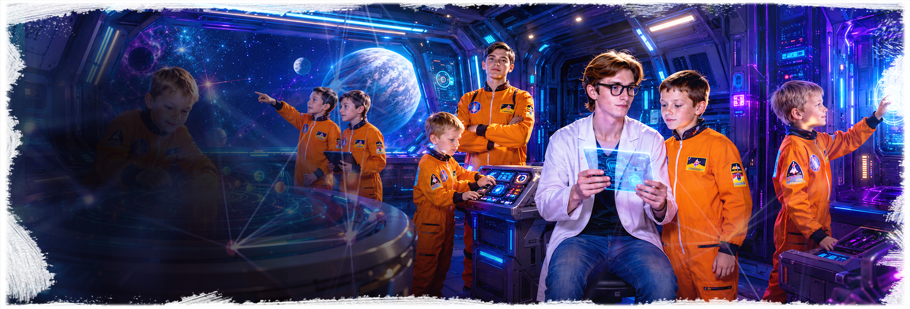
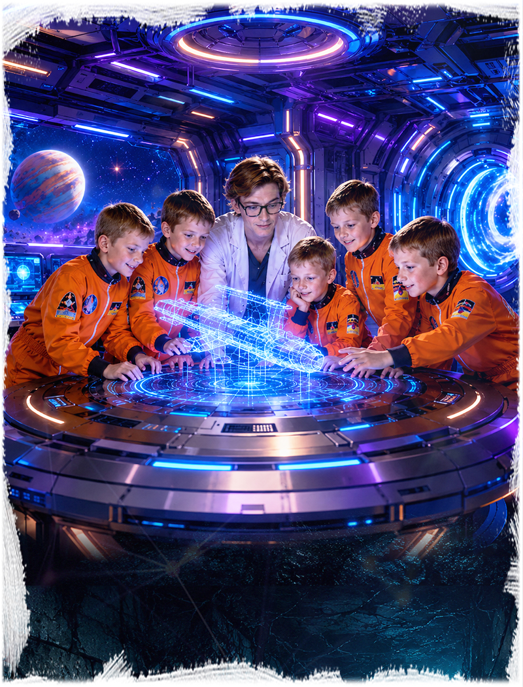
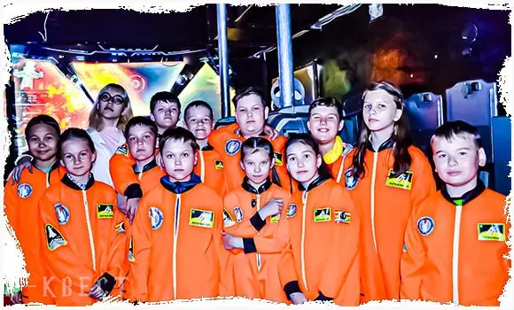
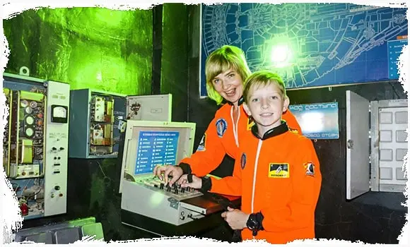
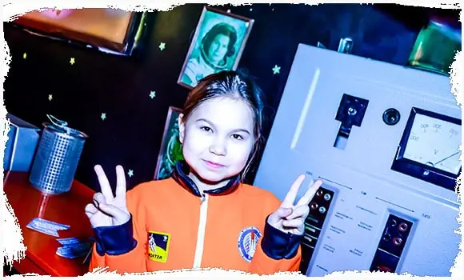
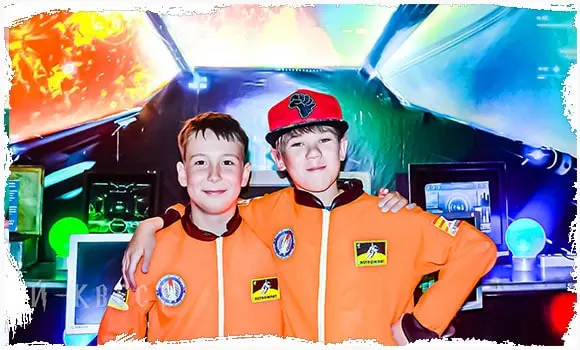
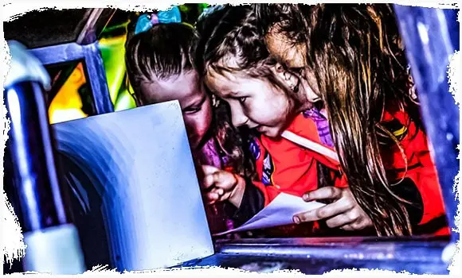

Приезжаете за 5 минутВстречаем гостей и помогаем с организацией.

Ангарск: ул. Восточная, 10А
Космический корабль
Командная космическая миссия для детей: восстановить управление кораблем, найти подсказки, решить задачи и пройти приключение вместе. В Ангарске игра проходит на площадке IQuest на ул. Восточная, 10А.
7+4-20 детей1 час игрычайная зонаот 1500 руб./чел.
Что входит в космический квест
Космический корабль - детский квест-приключение, где команда становится экипажем и выполняет миссию внутри атмосферной игровой комнаты.
Сценарий подходит для детей от 7 лет: здесь есть загадки, командные решения, фантастическая атмосфера и понятная цель.
Квест можно провести как отдельную игру или совместить с чайной зоной для дня рождения.
Почему удобно для дня рождения
- фантастическая тема без взрослого хоррора;
- командные задания и понятная миссия;
- ведущий помогает детям двигаться по сценарию;
- подходит младшим школьникам и подросткам;
- после квеста можно добавить чайную зону.
Как пройдет игра
Проходите инструктажОбъясняем правила, безопасность и формат игры.
Играете с ведущимВедущий держит темп и помогает по сценарию.
Чайная зона по желаниюМожно продолжить праздник с тортом и поздравлением.
Запишись на праздник
1. Выберите дату и время, заполните форму
2. Укажите возраст, количество детей и чайную зону
3. Нажмите кнопку забронировать
Цены и условия
Основные условия Космический корабль в Ангарске: цена, возраст, количество детей, длительность, адрес и возможность добавить чайную зону.
От 1500 руб./чел. Итог зависит от даты, количества детей и дополнительных услуг.
Рекомендуемый возраст - 7+. Для младших школьников темп можно сделать спокойнее.
Обычно 4-20 детей. Для большого дня рождения состав лучше согласовать заранее.
Игра длится около 1 часа. После прохождения можно добавить чайную зону.
Ангарск: ул. Восточная, 10А.
Можно подготовить торт, поздравление, стол и время для общения после игры.
Аниматор объясняет правила, помогает детям и держит темп праздника.
Можно выбрать только игру или добавить чайную зону и дополнительные активности.
Кому подойдет Космический корабль
Хороший выбор, если вы хотите
- детям, которые любят космос и фантастику;
- командам от 4 игроков;
- дню рождения с приключенческим сценарием;
- школьным компаниям от 7 лет;
- родителям, которым нужен квест без жесткого страха.
Космический корабль хорошо работает как первый квест: дети получают историю, задачи и финальную цель, но сценарий остается понятным и дружелюбным.
Для праздника можно добавить чайную зону и спокойно продолжить день рождения после миссии.
Атмосфера праздника
Фото показывают космическую атмосферу, игровые элементы и настроение приключения.






Схема проезда
Космический корабль в Ангарске проходит на площадках IQuest: Ангарск: ул. Восточная, 10А.
Ангарск
ул. Восточная, 10А
Площадка IQuest в Ангарске для детского праздника. Космический корабль.
Открыть в Яндекс КартахКосмический корабль на день рождения в Ангарске
В Ангарске Космический корабль проходит на ул. Восточная, 10А. Квест подходит для детского дня рождения, школьной компании и первого знакомства с командными сценариями.
Страница собрана под локальный запрос: здесь указаны адрес, карта, расписание именно для Ангарска, условия для родителей и возможность добавить чайную зону после игры.
При бронировании назовите возраст детей, количество гостей и повод праздника - администратор подскажет свободное время и комфортный тайминг.
Локальная информация
- Ангарск: ул. Восточная, 10А.
- Возраст: 7+.
- Можно добавить чайную зону после игры.
- Подходит для дня рождения и школьной компании.
- Все детали лучше уточнить при бронировании.
Космический корабль или другой праздник
Если выбираете формат дня рождения, сравните возраст, активность, адрес и то, насколько сценарий подходит для праздника.
| Формат | Возраст | Гости | Настроение | Адрес | Для дня рождения |
|---|---|---|---|---|---|
| Космический корабль | 7+ | 4-20 | приключение | Ангарск | да |
| Гарри Поттер | 7+ | 4-20 | волшебство | Ангарск | да |
| Замок Дракулы | 7+ | 4-20 | мистика | Иркутск | да |
| NERF | 7+ | 4-20 | активная игра | Ангарск | да |
Что важно родителям
Лучше обсудить заранее
- возраст детей и количество гостей;
- нужна ли чайная зона после игры;
- будет ли торт, свечи и поздравление;
- нужны ли дополнительные активности или ведущий;
- какой город и адрес удобнее для семьи.
Если праздник нужен без спешки, лучше сразу заложить время на игру и чайную зону. Так дети успевают пройти сценарий, поздравить именинника и спокойно пообщаться после приключения.
Для класса или большой компании администратор поможет подобрать формат, чтобы всем хватило места, ролей и внимания ведущего.
Что обычно нравится детям
Детям нравится чувствовать себя экипажем и двигаться к общей цели.
Сценарий сочетает поиск подсказок, логику и командные решения.
После миссии удобно продолжить день рождения за столом.
Похожие детские сценарии в Ангарске
Общая страницаКосмический корабль в двух городах
Вернуться к общей странице сценария для Иркутска и Ангарска.
Похожий сценарийAmong Us в АнгарскеКомандный квест с заданиями и поиском предателя.
Похожий сценарийГарри Поттер в АнгарскеВолшебный квест для детского дня рождения.
Готовый праздникДень рождения под ключ в АнгарскеПрограмма с квестом, чайной зоной и организацией.
Все вариантыДетские квесты в АнгарскеСравните площадку, форматы и адрес IQuest в городе.
Космический корабль в Ангарске: что важно знать перед бронью
В Ангарске Космический корабль проходит на Восточной, 10А и подходит для детей, которым нравится фантастика, поиск подсказок и командная миссия.
На этой странице расписание, адрес и условия относятся именно к Ангарску, поэтому ее удобно отправлять родителям гостей перед праздником.
Перед звонком удобно подготовить дату, возраст участников, примерное количество гостей и желаемый формат: только игра, игра с чайной зоной или праздник с дополнительными услугами.
Локальная проверка
- Ангарск: ул. Восточная, 10А, 120-й квартал;
- этаж, вход и место встречи лучше уточнить перед приездом;
- карта помогает заранее спланировать дорогу на Восточную, 10А;
- актуальные отзывы лучше смотреть в карточках 2ГИС и Яндекс Карт;
- расписание в форме бронирования относится к выбранной странице;
- если нужна чайная зона, ее стоит согласовать вместе со временем игры.
Частые вопросы
Где проходит Космический корабль в Ангарске?
Ангарск: ул. Восточная, 10А.
С какого возраста подходит квест?
Рекомендуемый возраст - 7+.
Можно ли провести день рождения?
Да, к квесту можно добавить чайную зону, торт и поздравление.
Сколько длится игра?
Около 1 часа, после игры можно запланировать время для гостей.
Выбрать время: Космический корабль в Ангарске
Позвоните или оставьте бронь на сайте: администратор подскажет свободное время, адрес, формат чайной зоны и программу под возраст детей.
Позвонить 8 (901) 666-888-1